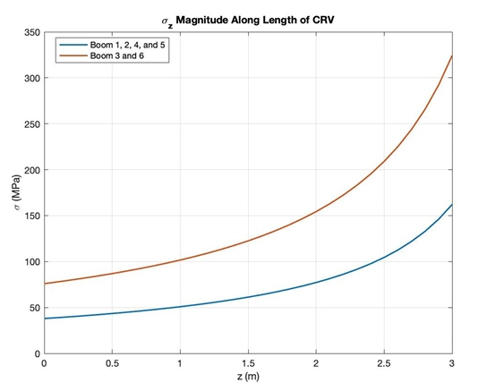
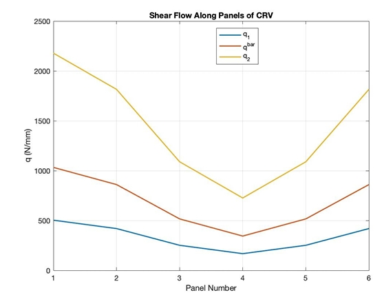

Designing From Nothing
This project began with a blank page. Given only a launch vehicle — the Ariane 6 — and a mission objective — crewed return from Low Earth Orbit — a four-person team designed a re-entry module from first principles. Every geometric parameter, material selection, wall thickness, and structural configuration was determined through analysis rather than given as a starting point.
The module takes the form of a tapered hexagonal box in L-73 aluminum, sized to fit within the Ariane 6 fairing at a maximum radius of 2.7m. It carries two windows and an access hatch — an unusual radially symmetric arrangement not typical of existing CRVs. The structural design was validated across five independent analyses, each addressing a different loading condition the module would face during launch and re-entry.
This was a collaborative effort across all four team members. Primary responsibility for the shear flow analysis lay with this author, with contributions spanning the tapered section stress analysis, warping calculations, and CAD modeling throughout the project.
Five Structural Analyses
The project was organized around five distinct structural problems, each requiring its own methodology and set of assumptions derived from the module's geometry and loading environment.
🌬️ Wind Shear Displacement
Modeled lateral displacement and angular rotation of the module under 18.75 kN wind shear at the Ariane 6 launch site in French Guiana, using a coupled stiffness matrix formulation.
🔩 Pressure Vessel Compliance
Analyzed skin and stringer stresses under ambient pressure loading, computing hoop stress, longitudinal stress, and shear load at stringer locations — verified against proof stress limits.
📐 Tapered Box Stress & Shear Flow
Computed axial boom stresses and panel shear flows along the tapered hexagonal body under combined shear force and bending moment from launch loading. The shear flow was solved as an open section first, then closed using moment equilibrium.
🪟 Cutout Reinforcement
Determined required reinforcement geometry around the hatch and window cutouts using stringer load redistribution and pressure vessel frame analysis — establishing the minimum flange thickness of 25mm.
🔄 Torsional Warping
Applied Saint-Venant warping theory to the thin-walled hexagonal closed section under applied torque, computing the warping displacement at each corner node and verifying closure conditions.
📦 CAD Model
Full 3D model of the tapered hexagonal module built in AutoCAD, including panel gridding, window and hatch cutouts, and the tapered frustum geometry from 2.7m base to 0.65m top radius.
Structural Verification
The core question for each analysis was the same: does the design meet proof stress requirements under the given loading? Across the two primary compliance checks — compression and shear — the results came in well within acceptable limits.
Design Review — Both Checks Pass
Compression check: 0.1855 — must be less than 1.0. Pass.
Shear check: 0.1978 — must be less than 1.0. Pass.
Both results indicate significant margin against buckling failure under
the combined pressure, compression, and shear loading conditions.
Wind Shear Response
Under 18.75 kN lateral wind shear at launch, the module displaces δ = 1.3 mm laterally and rotates θ = −2.6 mrad — both within acceptable bounds for the launch configuration.
Cutout Frame Sizing
Stress analysis at the hatch cutout confirmed that a 25mm square frame thickness in L-73 aluminum is sufficient to carry the redistributed loads — with a calculated stress of 64.7 MPa against a proof stress of 276 MPa.


Selected Code Excerpts
All analyses were implemented in MATLAB. The warping and shear flow scripts below represent the two sections most central to this author's contributions.
% Warping Displacement in a Tapered Hexagonal Box % Saint-Venant warping assumptions s = 2.19; % side length [m] t = [0.005, 0.005, 0.005, 0.005, 0.005, 0.005]; % wall thickness [m] A_E = (3*sqrt(3)/2)*s^2; % enclosed hexagon area [m²] rt = 3.6/2; % radial distance to wall midpoint [m] rvec = rt*ones(1,6); G = 2.29e10; T = 1500; % shear modulus [Pa], torque [Nm] J = (4*A_E^2) / sum(s./t); % torsional constant theta_dot = T / (G*J); % twist per unit length [rad/m] K = sum(1./t) / sum(rvec); % warping constant phi = zeros(1,6); for i = 1:5 dphi = s*(1/t(i) - K*rvec(i)); phi(i+1) = phi(i) + dphi; end w_physical = phi * theta_dot; % physical warping displacements [m] % Closure check — phi_A should return to 0 phi_A_check = phi(6) + s*(1/t(6) - K*rvec(6));
% External forces and geometry D = 18750; % shear force [N] M = 4210875; % moment [Nm] d = 3.7; % base diameter [m] alpha = 25.37; % taper angle [deg] A_B = 0.01; % boom cross-sectional area [m²] H = 3; % module height [m] dz = 0.1; z = 0:dz:H; % Boom stress along module length (z-direction) for i = 1:length(z) M_y = M + D*(H-z(i)); s_z = (d-2*z(i)*tand(alpha))/tand(60); % side length at height z sigma_Z3(i) = -M_y/(3*A_B*s_z); % booms 3 and 6 sigma_Z1(i) = M_y/(6*A_B*s_z); % booms 1,2,4,5 end % Shear flow — open section then closed via moment equilibrium q = zeros(6,3); q0 = zeros(6,3); for i = 1:3 Dx_w = -1.0751*10^6; s_zz = (d-2*z(i)*tand(alpha))/tand(60); Iyy = 3*A_B*s_zz^2; q0(2,i) = q0(1,i) - (Dx_w/Iyy)*A_B*0.5*s_zz; q0(3,i) = q0(2,i) - (Dx_w/Iyy)*A_B*s_zz; q0_real = -q0(2,i) - q0(3,i) - 0.5*q0(4,i); % closure condition q(:,i) = q0(:,i) + q0_real; end
What the Analysis Shows
The Design Meets Proof Stress Requirements
Both the compression and shear interaction checks came in under 0.20 — well within the required limit of 1.0. The design carries significant structural margin under the simulated launch loading conditions.
Taper Concentrates Stress at the Top
The reducing cross-section causes boom stresses to increase nonlinearly toward the top of the module — reaching ~325 MPa at the apex for the most loaded booms. This has direct implications for wall thickness selection and reinforcement at the upper rim.
Shear Flow Symmetry Confirms Load Path
The shear flow distribution across the six panels is symmetric about panel 4, as expected for a hexagonal section under unidirectional shear. Panel 1 carries the highest shear flow — a result that would inform skin thickness selection in a more detailed design iteration.
Scope for Further Development
The current analysis uses simplified boom-panel idealization and assumes uniform wall thickness. A more refined design would incorporate variable thickness panels, detailed thermal loading from re-entry, and a full dynamic analysis of the separation and descent phases.
Project Materials
Full project report available below, including all five analyses, derivations, and appendix code.